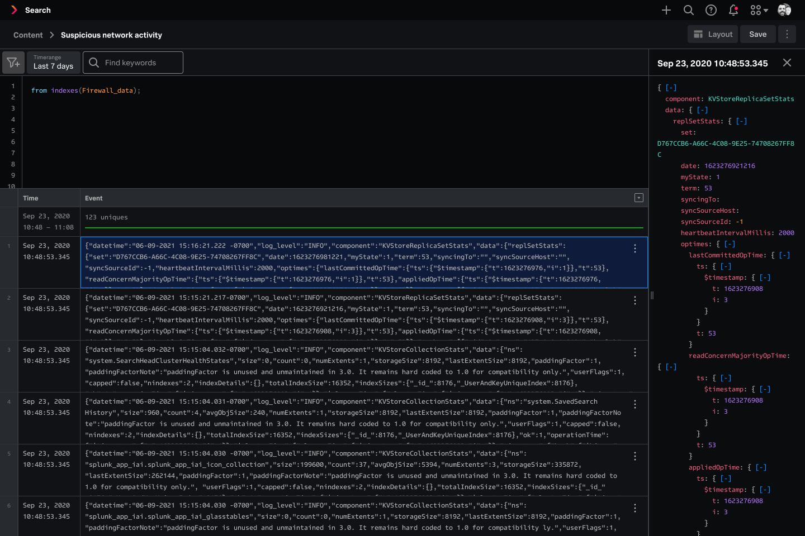
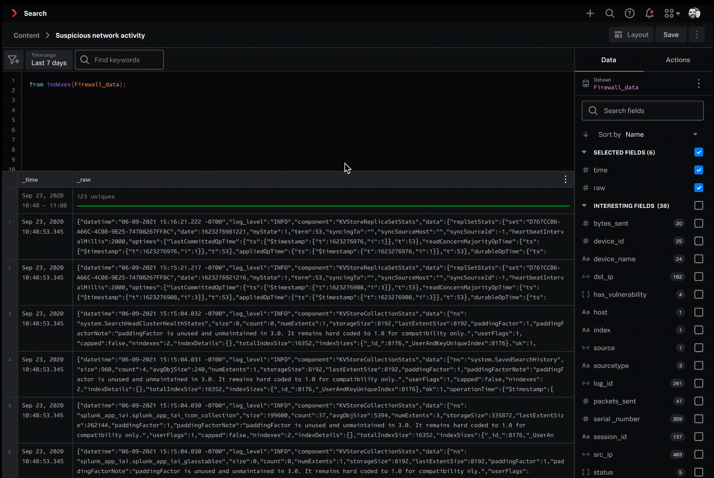

My Role
Executive Summary
I designed the point-and-click search experience that shipped as part of Splunk Cloud Platform's core product. Non-technical users can now investigate their data themselves, instead of asking a teammate who codes, which lets them catch and address problems sooner.
Project background
Splunk wanted to expand beyond its core technical user base. Splunk's flagship product, Enterprise, requires users to write code in order to search through data, so managers or business analysts who don't know how to code had to ask an engineer to do it for them. Splunk Cloud Platform is a new product that addresses this issue: engineers can keep writing code, and everyone else gets a point-and-click interface to do the same job.
The problem
Users need to scan their data quickly to catch anomalies, such as outliers, incorrectly extracted data, and values that don't look right. Once they spot something off, they need to find the cause and address it. How do we help non-technical users do all of that without writing code?
User needs
- Quickly scan raw data text to check for outliers and confirm data is extracted correctly, including seeing formatted JSON text
- Take actions on specific fields and values
- Find out what's wrong and fix it
Scan through events quickly
By default, the data grid truncates event text to 2 lines. Event text is often long, and users need to see the full text to catch anomalies. My solution let users expand cells, individually and all at once, and formatted the raw text so it's easier to read once expanded.
Expanding a cell
I initially explored 3 interaction patterns: double-clicking a row to expand it, a right-click menu to expand, and dragging the row divider.


My PM's feedback was that these were hard to discover. A visual affordance would make the expand option easier to find, so I then explored expand carats and a "show all lines" button.


I decided on "show all lines" because it already existed as a pattern in Splunk Enterprise. That meant less relearning for users switching between our products.
Expanding all cells at once
Beyond expanding individual cells, I proposed a column header option to expand every event in the grid at once, so users could see the full text of all their data.

My PM wasn't convinced. Most customers we'd talked to only expanded a handful of events, so she wanted to table it for a later release. I brought in engineering to check feasibility, and they backed the idea. It wasn't much extra work, and it sped up the workflow for users, so we agreed to include it in this release.
Formatting raw event text
Even with a cell expanded, raw event text is often code and appears as one dense block. The idea was to format it so users could scan it faster. When a user clicks a cell, a side panel opens with the formatted version. Every node is expanded by default. Customers told me they were annoyed at having to open nodes one by one, so showing everything expanded saved them that step.

Formatting all cells
I proposed a "format all" option so users could see formatted text for all cells, instead of one at a time. I brought it to my PM and engineering, but they said it wasn't feasible due to technical limitations, so we passed on the idea.

Taking action on interesting data
When users find something of interest, they dig deeper on specific fields. I designed interactions where users can hover over a field, right-click to pull up a menu, and take action from there. This works from both the main data grid and the side panel.

Final design
I designed point-and-click interactions for the data grid so users can quickly scan through their data and take action on what they find.

What I learned
1. Make sure everyone is aligned.
I started design explorations and only found out late that my designs didn't match the head PM's vision. That vision was never documented, and even with regular check-ins, the misalignment wasn't caught until later, and I had to rush to change my designs. I raised this with the team and we changed our process. Product vision would be documented so we had a working source of truth, and we'd sync with the head PM more often to catch misalignment earlier.
2. It's okay to have more than one way to perform an action.
I spent a lot of time trying to find the one, best way to expand a cell. My teammates pointed out that supporting multiple methods is a good solution, and many products have multiple ways to perform the same action. That reframed how I approach interaction design. Forcing a single path isn't always the best experience, and I've carried that into later projects.
3. Think beyond the page: consider the platform and product ecosystem when designing.
This project taught me to design with the ecosystem in mind, and consider patterns across the platform and products to make sure we have consistency. I matched the look of the side panel with side panels in other Splunk products. I also made sure that right clicking and hovering produce the same behavior across Splunk products.